무선설비산업기사 (2005-09-04 기출문제)
1과목: 디지털 전자회로
1. 그림의 증폭 회로에서 S를 단락 시켰을 경우에도 그 값의 변화가 거의 없는 것은?
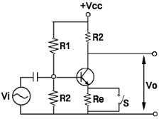
- 증폭기의 입력저항
- 증폭기의 안정도
- 증폭기의 전류 이득
- 증폭기의 전압이득
(정답률: 알수없음)

2. 수정편의 등가회로에서 L= 25[mH], C = 1.6[pF], R = 5[Ω]일 때 수정편의 Q 는 얼마인가?
- 25000
- 12500
- 10000
- 5000
(정답률: 알수없음)
3. T플립플롭을 토글(toggle) 플립플롭이라고 하는 주된 이유는?
- 상태변화를 위해서는 토글스위치가 필요하므로
- 2개의 입력펄스마다 토글되므로
- 출력이 스스로 토글되므로
- 각 입력펄스마다 출력이 토글되므로
(정답률: 알수없음)
4. 다음 표와 같은 Karnaugh map을 최소화하면?
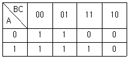
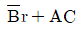
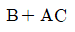
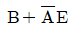
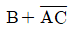
(정답률: 알수없음)
5. 4개의 J-K 플립플롭을 이용하여 구성할 수 있는 분주기의 최대값은 얼마인가?
- 8분주기
- 10분주기
- 16분주기
- 24분주기
(정답률: 알수없음)
6. 다음 그림의 회로는 어떤 역할을 하는가?
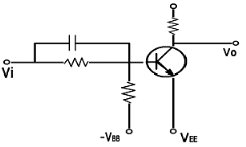
- NOT 회로
- AND 회로
- OR 회로
- exclusive OR 회로
(정답률: 알수없음)
7. 그림과 같은 회로는 무슨 회로인가?
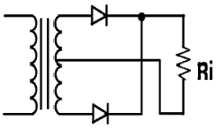
- 반파 정류회로
- 전파 정류회로
- 배 전압 회로
- 필터 회로
(정답률: 알수없음)
8. 다음 중 그림의 회로에서 궤환비(β)는?
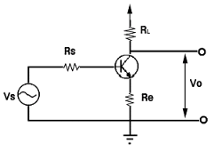
- -RL
- -(Re + RL)
- -(ReRL)
- -Re
(정답률: 50%)
9. 그림과 같은 회로에 입력 Vi가 인가 되었을 때 출력은 어느것이 가장 적당한가?
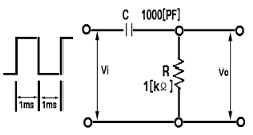
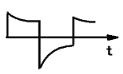
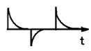
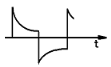
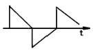
(정답률: 알수없음)
10. RLC 직렬공진 회로에서 공진주파수에 대한 선택도 Q 의 값은?(단, ω 는 각속도)
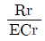
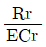
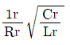
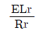
(정답률: 알수없음)
11. 그림에서 입력 전압 V1 및 V2와 출력전압 Vo의 관계는?
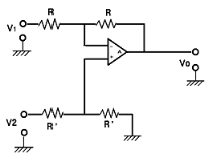
- Vo = V2 - V1
- Vo = V1 - V2
- Vo = (V2 - V1)
- Vo = (V2 + V1)
(정답률: 알수없음)
12. 2진수 1100을 그레이코드로 변환한 것은?
- 1111
- 1000
- 1010
- 0011
(정답률: 알수없음)
13. 반송파 vc = Vc sin ωct를 프 = Vm sin pt 로 진폭변조했을 때 피변조파 v(t)의 식은?
- v(t) = (Vc + Vm)sin pt
- v(t) = (Vc + Vm sin pt)sin ωct
- v(t) = (Vc + Vm)sin ωct
- v(t) = (Vc sin ωct + Vm)sin pt
(정답률: 알수없음)
14. R-S Flip-Flop을 J-K Flip-Flop으로 만들고자 할 때 필요한 게이트(Gate)는?
- OR gate 2개
- AND gate 2개
- NOR gate 2개
- NAND gate 2개
(정답률: 알수없음)
15. 다음 반복 펄스 파형에서 펄스의 점유율은 몇 [%]인가?(단, τ = 0.5[㎲], T = 10[㎲])
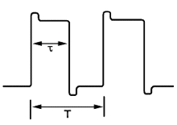
- 5[%]
- 10[%]
- 20[%]
- 25[%]
(정답률: 알수없음)
16. 그림과 같은 논리 회로의 출력은?
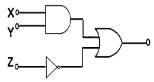
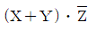
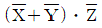
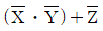
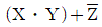
(정답률: 알수없음)
17. 논리식 A ( A + B + C )를 간단히 하면?
- A
- 0
- 1
- A + B + C
(정답률: 알수없음)
18. 수정진동자의 지지기(holder)가 갖추어야 할 조건으로 적합하지 않는 것은?
- 진동 에너지(energy)에 손실을 주지 않을것
- 지지기 및 전극과 수정 면사이의 상대위치 변화가 원활할것
- 외부로부터 기계적 진동이나 충격에 의해서 발진에 지장이 생기지 않을것
- 기압, 온도, 습도의 영향을 받지 않는 구조일 것
(정답률: 알수없음)
19. 다음 중 에미터 폴로워(emitter follower)의 특징이 아닌것은?
- 입출력 임피던스가 대단히 높다
- 부하 저항이 변화해도 전류, 전압 이득은 일정하게 유지된다.
- 전압이득은 1에 가깝다.
- 전류이득이 크다.
(정답률: 알수없음)
20. 변조도 40[%]인 진폭변조에서 반송파의 평균전력이 10[kw]이었다면 피변조파의 평균전력은 몇 [kw]인가?
- 10.8
- 8.3
- 4.2
- 2.5
(정답률: 알수없음)
2과목: 무선통신 기기
21. 다음 중 수퍼헤테로다인 수신기에서 수신주파수와 국부발진 주파수의 차가 항상 중간주파수가 되도록 조정하는 회로는?
- 트래킹 회로
- 디엠퍼시스 회로
- AGC 회로
- 주파수 변별기 회로
(정답률: 알수없음)
22. 수신기에서 증폭도와 내부잡음에 의하여 영향을 가장 많이 받는 것은?
- 감도특성 측정
- 선택도의 측정
- 충실도의 측정
- 안정도의 측정
(정답률: 알수없음)
23. 다음 수신기의 각 회로 중 FM 수신기에서만 쓰이고 있는 것은?
- 주파수 변환회로
- 주파수 변별기
- 국부 발진기
- 대역통과 필터
(정답률: 알수없음)
24. 스펙트럼 분석기(Spectrum Analyzer)의 구성 요소가 아닌 것은?
- 톱니파 발진 회로
- IF 증폭회로
- CRT
- 주파수 변복조기
(정답률: 알수없음)
25. 다음은 전원장치의 구비조건이다. 맞지 않는 것은?
- 연속적으로 확실한 전원을 공급해야 한다.
- 전원전압의 변동이 가급적 적어야 한다.
- 취급이 용이하고 경제적이어야 한다.
- 전원의 전류량을 쉽게 증가시킬 수 있어야 한다.
(정답률: 알수없음)
26. 첨두 전력 10[W]인 단측파대 송신기의 출력은 무변조시에 얼마나 되는가?(단 전파형식은 J3E임)
- 14.14[W]
- 10[W]
- 7.07[W]
- 0[W]
(정답률: 알수없음)
27. 수정 발진기의 일반적인 특성 중 잘못 설명한 것은?
- 수정 전동자가 기계적, 물리적으로 안정하다.
- 수정편의 Q가 매우 높다.
- 부하 변동의 영향을 전혀받지 않는다.
- 유도성 주파수 폭이 매우좁다.
(정답률: 알수없음)
28. AM 송신기의 출력이 80% 변조시 200[W]이었다면 30%변조시에는 출력이 얼마나 되겠는가?
- 약 75[W]
- 약 152[W]
- 약 159[W]
- 약 165[W]
(정답률: 알수없음)
29. FM 복조에 PLL 회로가 많이 사용되고 있다. 다음 중 PLL 의 기본적인 구성 요소가 아닌 것은?
- 전압제어발진기(VCO) 회로
- 위상 비교기 (PC) 회로
- 샘플링(Sampling) 회로
- 저역통과필터(LPF)
(정답률: 알수없음)
30. 마이크로파 무급전 중계 방식에서 전파 손실을 경감시키기 위한 방법으로 타당하지 않은 것은?
- 반사판의 크기 또는 송수신 안테나의 이득을 크게 한다.
- 반사판의 반사각도를 가능한 직각에 가깝게 한다.
- 송수신 안테나의 거리를 짧게 한다.
- 사용 주파수를 낮게 한다.
(정답률: 알수없음)
31. 정류기의 평활 회로에 이용하는 여파기로 가장 적당한 것은?
- 고역 여파기
- 저역 여파기
- 대역 여파기
- 대역 소거 여파기
(정답률: 70%)
32. 수신 감도 (Sensitivity)를 향상시키는 방법에 대해 잘못 설명 된 것은?
- 고주파 증폭부는 내부잡음이 적은 소자를 사용한다.
- 고주파 동조 회로 Q를 크게 한다.
- IF 대역폭을 가능한 넓게 취한다.
- 내부 잡음이 적은 주파수 변환기를 사용한다.
(정답률: 알수없음)
33. SSB 수신기에서 동기 조정(Speech clarifier)을 행하는 목적으로 가장 타당한 것은?
- 링복조를 하기 때문에
- 주파수 편차를 줄이기 위하여
- 전 반송파 방식만을 수신하기 위하여
- 상하 측파대를 동시에 수신하기 위하여
(정답률: 알수없음)
34. 직경 1.2 ~ 1.8m 의 소형 안테나와 낮은 송신출력을 갖는 위성통신 지상장치로 개인적으로 소유하는 초소형 지구국 시스템을 무엇이라 하는가?
- INMARSAT
- VSAT
- GPS
- INTELSAT
(정답률: 알수없음)
35. 무선송신기의 발진기의 조건으로 맞지 않는 것은?
- 주파수 안정도가 높을 것
- 고조파가 발생이 적을 것
- 부하의 변동에 영향이 클 것
- 주파수의 미세조정이 용이할 것
(정답률: 알수없음)
36. Circulator 에 대하여 가장 알맞게 설명한 것은?
- BPF 의 일종이다.
- 저잡음 중폭기이다.
- 마이크로 웨이브 발진기이다.
- 입력과 출력신호를 분리하는 장치이다.
(정답률: 30%)
37. 통신에서 등화기(equalizer)에 대한 설명으로 가장 옳은 것은?
- 등화기는 채널에 의한 심볼간 간섭 및 간섭특성을 개선하기 위해 사용한다.
- 등화기의 성능은 아이패턴으로 관찰하기가 곤란하다.
- 채널특성이 시간에 따라 변한다면 등화기를 사용하기 곤란하다.
- 디지털 등화기의 기본개념은 가입자가 보내는 신호를 미리 알고 있어야 한다.
(정답률: 알수없음)
38. C급 전력 증폭기의 출력을 100[W], 컬렉효율을 70[%], 공진 회로의 Q는 무주하시에 200, 부하시에 15일 때 공지 회로의 효율은?
- 92.5[%]
- 78.5[%]
- 75[%]
- 7.5[%]
(정답률: 60%)
39. 검파기에서 부하의 값이 직류시와 저주파교류시에 상이한 겂 때문에 발생하는 파형 왜곡은?
- negative peak clipping
- 포락선 왜곡
- diagonal clipping
- 톱니파의 하강경사 왜곡
(정답률: 34%)
40. 위성통신에서 주로 사용되는 주파수 범위는?
- 30 GHz ~ 300 GHz
- 3 GHz ~ 30 GHz
- 300 MHz ~ 3 GHz
- 30 MHz ~ 300 MHz
(정답률: 알수없음)
3과목: 안테나 개론
41. 급전선과 안테나 간에 정합하는 이유 중 옳지 않은 것은?
- 최대 전력을 전소한다.
- 급전선의 손실증가를 막는다
- 정재파비를 크게 한다.
- 부정합 손실을 적게 한다.
(정답률: 알수없음)
42. 어떤 안테나의 복사전력이 100[W]이고, 최대 복사 방향으로 거리 r인 점의 전계강도가 300[㎶/m]이었고 같은 송신점에 반파장다이폴 안테나를 세워 복사전력 200[W]일때 동일지점 r점에서 100[㎶/m]의 전계강도가 측정 되었다면 피측정 안테나의 상대이득은 몇 dB 인가?
- 9.54
- 12.55
- 15.03
- 20.14
(정답률: 알수없음)
43. 다음 중 비동조 급전선의 설명으로 맞지 않는 것은?
- 임피던스 정합 회로를 사용한다.
- 급전선상에는 진행파를 실어서 전송한다.
- 전송효율이 동조 급전선 보다 나쁘다.
- 동축 케이블을 비동조 급전선으로 사용한다.
(정답률: 알수없음)
44. 롬빅(Rhombic)안테나에 대한 설명 중 틀린 것은?
- 진행파형 안테나이다.
- 광대역성이다.
- 8자형 지향성이다.
- 단파통신에 주로 사용된다.
(정답률: 알수없음)
45. 파라볼라 안테나(parabola antenna)의 특징 중 틀린 것은?
- 비교적 소형이고 구조가 간단하다.
- 지향성이 예리하고 이득이 높다.
- 부엽 (side lobe)이 비교적 많다.
- 광대역 임피던스 정합이 쉽다.
(정답률: 알수없음)
46. 다음 중 마이크로파 통신의 특징으로 가장 알맞는 것은?
- 광대역 통신이 가능하기 때문에 다량의 정보를 단시간에 전송 가능하다.
- 안테나가 대형이고 무지향성을 얻을 수 있다.
- 전리층 반사를 이용한 원거리 통신을 한다.
- 외부잡음의 영향이 크다
(정답률: 알수없음)
47. 웨이브 안테나의 설명으로 틀린 것은?
- 효율이 높다.
- 광대역 특성을 갖는다.
- 진행파 안테나이다.
- 장중파대의 수신용이다.
(정답률: 알수없음)
48. 그림과 같은 TE10 파에서 차단 파장을 구하면?
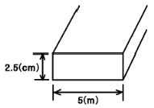
- 2.5 [cm]
- 5 [cm]
- 10 [cm]
- 20 [cm]
(정답률: 알수없음)
49. 임피던스 50[Ω]인 어떤 급전선의 입사전력 및 반사전력을 측정한 것이 각각 5[W], 0.2[W]이다. 이 전송계의 전압정재파비는 얼마인가?
- 3.1
- 1.5
- 4.5
- 0.8
(정답률: 알수없음)
50. 태양에서 발생하는 자외선의 돌발적 증가로 인하여 발생되는 건파방해는?
- 공전
- 델린저 현상
- 대척점 효과
- 에코우
(정답률: 알수없음)
51. 전리층에 전파가 입사할 때 받는 현상이 아닌 것은?
- 전파의 산란
- 델린저 현상
- 감쇠(흡수)현상
- 편파면의 회전
(정답률: 알수없음)
52. 수직 접지 안테나의 길이 ℓ 이 λ/4 ＜ ℓ ＜ λ/2 일때 무엇을 삽입하면 공진 시킬 수 있는가?
- 연장코일 (coil)
- 단축 콘덴서(condenser)
- 안테나는 분포상수회로이므로 항상 공진되어 있다.
- 저항과 coil을 직렬로 연결한다.
(정답률: 알수없음)
53. 반파장 더블렛(doubleet)의 단축율 δ 의 표시로써 옳은 것은?(단. Z0 는 특성 임피던스)
- δ ≒ 42.55 / Z0
- δ ≒ 42.55 / ( π ㆍ Z0 )
- δ ≒ 73.13 / Z0
- δ ≒ 73.13 / ( π ㆍ Z0 )
(정답률: 알수없음)
54. 대류권 산란파의 특징이 아닌 것은?
- 지리적(대지) 조건의 영향을 받지 않는다.
- 가시거리외 통신이 가능하다.
- 전파 손실은 자유공간 전파에 비해 매우 크다
- 지향성이 예민한 안테나를 사용한다.
(정답률: 알수없음)
55. 실효 높이를 크게 하기 위한 구조물이 설치되지 않은 안테나는?
- 정관형 안테나
- T형 안테나
- 역 L형 안테나
- 반파장 안테나
(정답률: 알수없음)
56. 위성틍신용 지구국 안테나로 가장 적당한 것은?
- 대수주기(Log periodic)
- 롬빅(Rhombic)
- 카세그레인(Cassegrain) 안테나
- 수퍼게인(Supergain)
(정답률: 알수없음)
57. 어느 안테나에 5[A]의 전류를 흘렸더니 300[W]의 복사 전력이 생겼다. 복사저항을 구하면 얼마인가?
- 5[Ω]
- 8[Ω]
- 10[Ω]
- 12[Ω]
(정답률: 알수없음)
58. 다음 중 전파의 특성에 관한 설명 중 틀린 것은?
- 유전율이 커지면 파장은 길어진다.
- 전계 벡터가 X측과 Y측으로 구성되어 크기가 같은 경우에는 원편파라고 한다.
- 복사 전계의 크기는 거리에 반비례한다.
- 전파의 주파수가 높을 수록 직진성이 강하다.
(정답률: 알수없음)
59. λ/4 수직 안테나의 길이가 15[m]이면 전파의 주파수는?
- 0.5[MHz]
- 5[MHz]
- 15[MHz]
- 25[MHz]
(정답률: 알수없음)
60. 송수신 안테나 길이가 각각 1m 일때 직접파의 통달거리는?
- 8.22[km]
- 4.11[km]
- 3.57[km]
- 7.14[km]
(정답률: 알수없음)
4과목: 전자계산기 일반 및 무선설비기준
61. ASCII 코드에서 존(ZONE) 비트로 사용되는 비트의 수는?
- 1
- 2
- 3
- 4
(정답률: 알수없음)
62. 정보를 기억장치에 기억 또는 읽어내는 명령을 한 후부터 실제의 정보가 기억 도는 읽기 시작 할 때까지의 소요시간은?
- Access time
- Idle time
- Run time
- Seek time
(정답률: 알수없음)
63. 기억 장치에 기억된 명령이 순서대로 중앙처리 장치에서 실행될 수 있도록 주소를 지정해 주는 레지스터는?
- 명령 레지스터
- 스택 포인터
- 프로그램 카운터
- 명령어 카운터
(정답률: 알수없음)
64. 2의 보수 표현 방법에 의해 10진수 36과 -72를 8비트로 올바르게 표현한 것은?
- 00100100, 00111000
- 00100100, 10111000
- 00100100, 10110111
- 10100100, 01000111
(정답률: 알수없음)
65. 다음 중에서 컴퓨터 운영체제의 목적으로 부적합한 것은?
- 신회성을 향상 시킨다.
- 응답시간을 단축 시킨다.
- 사용자 편의를 극소화 시킨다.
- 처리능력을 증대 시킨다.
(정답률: 알수없음)
66. 데이터의 표현단위와 관계가 먼 것은?
- 바이트(byte)
- 레코드(record)
- 메모리(memory)
- 파일(file)
(정답률: 알수없음)
67. 여러개의 입출력주변장치 중 어느 장치로부터 인터럽트가 발생되었는지를 CPU가 하나씩 차례로 점검하여 인터럽트를 요구한 장치를 찾아내는 방식은?
- 데이지 체인
- 폴링
- 벡터
- 우선순위
(정답률: 59%)
68. 프로그램 작성단계애서 순서도를 작성하는 시기는?
- 문제분석과 program의 구조설계가 끝난 후
- Source의 입력이 끝난후
- program 작성이 끝난후
- error debugging중
(정답률: 알수없음)
69. 주기억 장치의 속도가 중앙처리장치의 속도보다 현저히 늦을 때 명령의 수행속도는 주기억 장치의 속도에 따른 제약을 받는다. 이것을 해결하기 위한 장치는?
- cache memory
- virtual memory
- segment memory
- module memory
(정답률: 알수없음)
70. 마이크로 컴퓨터에서 제어용 프로그램이 저장되는 곳은?
- CPU
- ROM
- RAM
- I/O Port
(정답률: 알수없음)
71. 전파법의 목적이 아닌 것은?
- 전파의 효율적인 이용 및 관리 등에 관한 사항 규정
- 전파이용기술 개발의 촉진
- 전파자원의 균등한 분배 및 이용보장
- 전파 진흥 및 공공 복리 증진에 이바지
(정답률: 알수없음)
72. 정보통신 기기인증 규칙의 목적이 아닌 것은?
- 전기통신기자재에 대한 형식 승인
- 무선설비의 기기에 대한 형식 감정
- 전자파로부터 영향을 받는 기기에 대한 전자파 적합등록에 관한 필요한 사항
- 전파환경의 측정에 대한 필요한 사항
(정답률: 알수없음)
73. 안전시설기준에서 고압전기가 아닌 것은?
- 600V를 초과하는 직류전압
- 750V를 초과하는 직류전압
- 600V를 초과하는 고주파전압
- 600V를 초과하는 교류전압
(정답률: 알수없음)
74. 다음 중 인증이 면제되는 정보통신기기는?
- 외국으로부터 도입(임대차 또는 용선계약에 의한 경우 포함)하는 선박 또는 항공기에 설치된 형식검정 및 형식등록 대상기기
- 기간통신망의 분계점에 유선으로 직접 접속하여 사용할 수 있는 전기 통신기자재
- 전송망의 분계점에 직접 접속하여 사용할 수 있는 전기 통신기자재
- 기간 통신망에 직접 접속되지 아니하는 전지통신 기자재로서 기간 통신망 또는 기간 통신 망 이용자에게 위해를 줄 수 있는 종합정보통신망(ISDN)용 단말기기류
(정답률: 알수없음)
75. 전파관게법에 규정된 규격전력은?
- 무변조 상태에서 무선 주파수 1[Hz]사이에 송신기에서 공중선계의 급전선에 공급되는 평균전력을 말한다.
- 통산 동작상태에서 변조포락선의 파고에서의 무선주파수 1[Hz]간에 송신기로부터 공중선계의 급전선에 공급되는 평균전력을 말한다.
- 송신장치의 종단증폭기의 정격출력을 말한다.
- 무변조시의 종단 진공관에 공급되는 직유양극전압에 직류양극전류를 곱한 것을 말한다.
(정답률: 알수없음)
76. 송신설비의 공중선 급전선 등 고압전기를 통한는 장치는 원칙적으로 사람이 보행하거나 기거하는 평면으로부터 몇 미터 이상의 높이에 설치 하여야 하는가?
- 4.5 미터
- 3.5 미터
- 2.5 미터
- 1.5 미터
(정답률: 알수없음)
77. 다음 중 평균전력으로 표시되는 공중선 전력의 전파형식은?
- A2A
- H3E
- R3E
- J3E
(정답률: 알수없음)
78. 다음 중 전파법의 규정에 의한 인증의 종류가 아닌 것은?
- 형식등록
- 전자파적합등록
- 형식검정
- 형식승인
(정답률: 알수없음)
79. A3E 전파를 사용하는 표준방송국 무선설비의 정유주파수대폭의 허용치는?
- 3[kHz]
- 5[kHz]
- 10[kHz]
- 12[kHz]
(정답률: 알수없음)
80. 무선설비의 공중선계의 조건이 아닌 것은?
- 이득이 높을 것
- 능률이 좋을 것
- 정합이 충분할 것
- 지향성이 다양할 것
(정답률: 알수없음)